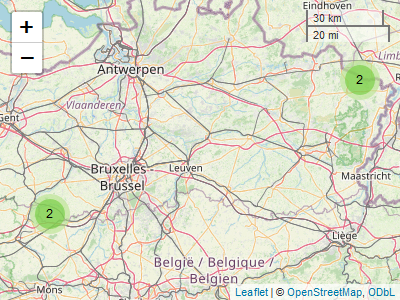

Camtraptor is an R package to read, explore and visualize Camera Trap Data Packages (Camtrap DP). Camtrap DP is a community developed data exchange format for this type of data. With camtraptor you can read and filter data, create overviews of observed species, relative abundance or effort, and plot these data on a map.
To get started, see:
- Vignettes: tutorials showcasing functionality.
- Function reference: overview of all functions.
Installation
You can install the development version of camtraptor from GitHub with:
# install.packages("devtools")
devtools::install_github("inbo/camtraptor")Example
Get the taxonomic coverage for an example Camera Trap Data Package mica:
library(camtraptor)
get_species(mica)
#> # A tibble: 9 × 5
#> taxonID taxonIDReference scientificName vernacularNames… vernacularNames…
#> <chr> <chr> <chr> <chr> <chr>
#> 1 DGP6 https://www.catalogu… Anas platyrhy… mallard wilde eend
#> 2 DGPL https://www.catalogu… Anas strepera gadwall krakeend
#> 3 32FH https://www.catalogu… Ardea great herons reigers
#> 4 GCHS https://www.catalogu… Ardea cinerea grey heron blauwe reiger
#> 5 RQPW https://www.catalogu… Castor fiber Eurasian beaver bever
#> 6 6MB3T https://www.catalogu… Homo sapiens human mens
#> 7 3Y9VW https://www.catalogu… Martes foina beech marten steenmarter
#> 8 44QYC https://www.catalogu… Mustela putor… European polecat bunzing
#> 9 5BSG3 https://www.catalogu… Vulpes vulpes red fox vosFilter observations in mica on female mallards and map the number of individuals per deployment location:
map_dep(
mica,
feature = "n_individuals",
species = "Anas platyrhynchos",
sex = "female"
)
#> There are 4 deployments with no observations: 29b7d356-4bb4-4ec4-b792-2af5cc32efa8, 577b543a-2cf1-4b23-b6d2-cda7e2eac372, 62c200a9-0e03-4495-bcd8-032944f6f5a1 and 7ca633fa-64f8-4cfc-a628-6b0c419056d7
camtraptor vs camtrapR and activity
Camtraptor provides and bundles much needed functionality to read, explore and visualize Camera Trap Data Packages. Over time we hope to include some or all of this functionality in widely used R packages such as camtrapR and activity.
Meta
- We welcome contributions including bug reports.
- License: MIT
- Get citation information for
camtraptorin R doingcitation("camtraptor"). - Please note that this project is released with a Contributor Code of Conduct. By participating in this project you agree to abide by its terms.